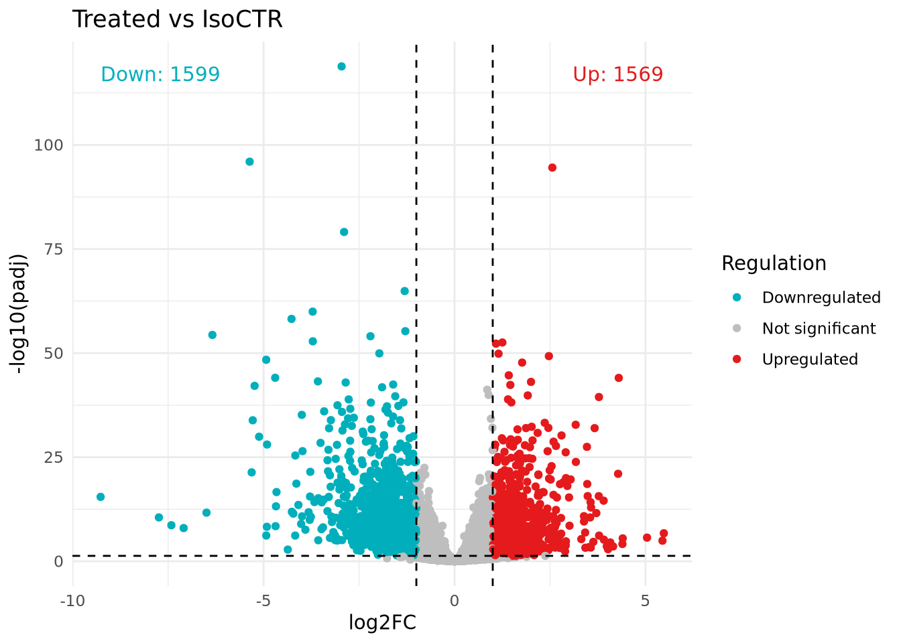

Date: 18/10/2025
Description: Palmieri et al. (2025) generated an organoid-like structure from DMD muscle cells (derived from patient iPSCs) co-cultured with fibroblasts. This dataset contains 12 samples of 3 conditions: IsoCTR, Untreated (disease), and Treated (disease treated with high dose of AAV gene therapy). Each condition includes 4 biological replicates. Raw data are retrieved from the NCBI Bioproject database under accession PRJNA1208956.
# Get table from ENA API
# This table contains the links to all raw fastq files
curl -s "https://www.ebi.ac.uk/ena/portal/api/filereport?accession=PRJNA1208956&result=read_run&fields=run_accession,fastq_ftp" > ena_runs.txt
# Download all files
# Paired-end reads ==> 2 fastq files for each sample
awk -F'\t' 'NR>1 {print $2}' ena_runs.txt | tr ';' '\n' | while read url; do
wget ftp://$url
doneRaw fastq files are imported into FastQC for some quality control checks. In return, we receive an HTML-based report on each fastq file.
# module load fastqc
# mkdir -p reads_qc
for sample in fastq_files/*.fastq.gz
do
base=$(basename $sample .fastq.gz)
fastqc "fastq_files/$base.fastq.gz" --outdir reads_qc
doneLooks like the adapters haven’t been cut. We’ll use fastp, an
all-in-one fastq file preprocessor, for this job.
# module load fastp
# mkdir -p clean_reads
for sample in fastq_files/*_1.fastq.gz
do
base=$(basename "$sample" _1.fastq.gz)
fastp \
-i "fastq_files/${base}_1.fastq.gz" \
-I "fastq_files/${base}_2.fastq.gz" \
-o "clean_reads/${base}_1_clean.fastq.gz" \
-O "clean_reads/${base}_2_clean.fastq.gz" \
-h "clean_reads/${base}_fastp.html" \
-j "clean_reads/${base}_fastp.json" \
-w 12 # run one sample at a time using 12 threads
doneCheck folder size regularly:
du -sh /shared/home/minhytran/* | sort -hPrior to alignment, we need to download human reference genome (GRCh38/hg38) and index it.
# Download reference genome
curl -o ref_genome/GCF_000001405.40_GRCh38.p14_genomic.fna.gz \
https://ftp.ncbi.nlm.nih.gov/genomes/all/GCF/000/001/405/GCF_000001405.40_GRCh38.p14/GCF_000001405.40_GRCh38.p14_genomic.fna.gz
# To decompress fasta file :
# gunzip GCF_000001405.40_GRCh38.p14_genomic.fna.gz
# Build genome indexes :
# module load hisat2
# mkdir -p ref_genome/index_hisat2
hisat2-build ref_genome/Homo_sapiens.GRCh38.dna.primary_assembly.fa \
ref_genome/index_hisat2/humanNow we’ll map the (paired) reads to the reference. Remember to use ‘clean’ fastq files. To avoid crashing the alignment, directly output sorted BAM files (skip SAM and unsorted BAM).
# module load hisat2 samtools
# mkdir -p reads_mapping
for sample in clean_reads/SRR3207614*_1_clean.fastq.gz
do
base=$(basename "$sample" _1_clean.fastq.gz)
hisat2 -q -p 12 \
--summary-file "./reads_mapping/summary_${base}.txt" \
-x "./ref_genome/index_hisat2/human" \
-1 "./clean_reads/${base}_1_clean.fastq.gz" \
-2 "./clean_reads/${base}_2_clean.fastq.gz" \
| samtools sort -@ 12 -o ./reads_mapping/${base}.sorted.bam
doneConvert SAM to BAM file (binary format) → save space (done previously)
BAM files need to be sorted (done previously) and indexed
# module load samtools
for sample in reads_mapping/*.sorted.bam
do
base=$(basename "$sample" .sorted.bam)
# Index sorted BAM
samtools index "reads_mapping/${base}.sorted.bam"
doneNow we’ll pass all the sorted, indexed BAM files through
featureCounts function (subread package) to generate the
count matrix. We also need an annotation file to do this. Parameters
-t "exon" -g gene_id are to count reads mapped to exon then
summarize to gene-level (i.e. many exons belong to single gene id).
# Download annotation file (.gtf)
wget ftp://ftp.ensembl.org/pub/release-100/gtf/homo_sapiens/Homo_sapiens.GRCh38.100.gtf.gz
# Unzip (then move to ref_genome folder)
gunzip Homo_sapiens.GRCh38.100.gtf.gz
# module load subread
# Remember -p to tell featureCounts that BAM files contain paired-end reads
featureCounts -a ./ref_genome/Homo_sapiens.GRCh38.100.gtf \
-s 0 -t "exon" -g gene_id \
-p --countReadPairs \
-o ./count_matrix.counts \
./reads_mapping/SRR*.sorted.bamNow we can read the count matrix into R:
# Read count table
count_tab <- read.table(file = "./projects/project_1/dmd-organoid_count_matrix.counts",
header = TRUE,
row.names = 1,
sep = "\t",
comment.char = "#")
# Clean column names
colnames(count_tab) <- gsub("^.*\\/", "",
colnames(count_tab)) # to match everything from the start of the string up to and including the last slash /
colnames(count_tab) <- gsub("\\.sorted\\.bam$", "",
colnames(count_tab)) # drop ".sorted.bam"
colnames(count_tab) <- gsub("^\\.\\.reads_mapping\\.", "",
colnames(count_tab)) # from the start, drop "..reads_mapping"
colnames(count_tab)## [1] "Chr" "Start" "End" "Strand" "Length"
## [6] "SRR32076135" "SRR32076136" "SRR32076137" "SRR32076138" "SRR32076139"
## [11] "SRR32076140" "SRR32076141" "SRR32076142" "SRR32076143" "SRR32076144"
## [16] "SRR32076145" "SRR32076146"# Drop annotation columns and keep the counts only
count_tab <- count_tab[, -c(1:5)]| SRR32076135 | SRR32076136 | SRR32076137 | SRR32076138 | SRR32076139 | SRR32076140 | SRR32076141 | SRR32076142 | SRR32076143 | SRR32076144 | SRR32076145 | SRR32076146 | |
|---|---|---|---|---|---|---|---|---|---|---|---|---|
| ENSG00000186092 | 0 | 0 | 0 | 0 | 0 | 0 | 0 | 0 | 0 | 0 | 0 | 0 |
| ENSG00000284733 | 0 | 0 | 0 | 0 | 0 | 0 | 0 | 0 | 0 | 0 | 0 | 0 |
| ENSG00000284662 | 0 | 0 | 0 | 0 | 0 | 0 | 0 | 0 | 0 | 0 | 0 | 0 |
| ENSG00000187634 | 414 | 289 | 107 | 437 | 242 | 375 | 337 | 138 | 419 | 345 | 117 | 111 |
| ENSG00000188976 | 2342 | 2056 | 1091 | 2672 | 1551 | 2108 | 2394 | 3062 | 2306 | 2449 | 1196 | 2706 |
| ENSG00000187961 | 627 | 557 | 259 | 643 | 361 | 502 | 642 | 563 | 594 | 559 | 278 | 495 |
And metadata file:
library(readxl)
metadata <- read_excel("./projects/project_1/dmd-organoid_metadata.xlsx")
meta <- as.data.frame(metadata[,c(1,3)]) # keep 2 columns: sample and sample_type
meta$sample_type <- factor(meta$sample_type) # sample_type as factor
# sample names have to be rownames
rownames(meta) <- meta$sample
meta$sample <- NULL
# Map row names (sample names) from meta to column names of count table
name_map <- setNames(metadata$sample, metadata$sample_id)
colnames(count_tab) <- name_map[colnames(count_tab)]
# Reorder meta to match the order of columns in count table
meta <- meta[colnames(count_tab), , drop=FALSE]
# Check if it's good to go
all(rownames(meta) == colnames(count_tab))## [1] TRUE| sample_type | |
|---|---|
| DMDdEx8-9-high-1 | Treated |
| DMDdEx8-9-high-2 | Treated |
| corrDMDdEx8-9-4 | IsoCTR |
| DMDdEx8-9-1 | Untreated |
| DMDdEx8-9-2 | Untreated |
| DMDdEx8-9-3 | Untreated |
| DMDdEx8-9-4 | Untreated |
| corrDMDdEx8-9-3 | IsoCTR |
| DMDdEx8-9-high-4 | Treated |
| DMDdEx8-9-high-3 | Treated |
| corrDMDdEx8-9-2 | IsoCTR |
| corrDMDdEx8-9-1 | IsoCTR |
DESeq2 expects a raw count matrix as input. The model will internally
correct for library size. Remember that
nrow(colData) == ncol(countData).
library(DESeq2)
dds <- DESeqDataSetFromMatrix(
countData = count_tab,
colData = meta,
design = ~ sample_type)
dds## class: DESeqDataSet
## dim: 20420 12
## metadata(1): version
## assays(1): counts
## rownames(20420): ENSG00000186092 ENSG00000284733 ... ENSG00000277475
## ENSG00000268674
## rowData names(0):
## colnames(12): DMDdEx8-9-high-1 DMDdEx8-9-high-2 ... corrDMDdEx8-9-2
## corrDMDdEx8-9-1
## colData names(1): sample_typeHere we’re keeping only genes that have at least 10 read counts in at least 4 samples. The mean-sd plot suggests that variance is stabilized, meaning genes with low and high mean counts all have similar variances.
smallestGroupSize <- 4
keep <- rowSums(counts(dds) >= 10) >= smallestGroupSize
dds_filt <- dds[keep,]
library(vsn)
vsd <- vst(dds_filt)
meanSdPlot(assay(vsd))For differential gene expression (DEG) analysis, DESeq2 operates directly on the raw counts. However, for clustering and visualization, we better use normalized and transformed expression values. DESeq2 uses a normalization method called median of ratios.
# DESeqDataSet object does not store a matrix of normalized counts by default
# We can to get it by: counts(dds, normalized=TRUE)
dds_filt <- DESeq(dds_filt)
select_top_genes <- order(rowMeans(counts(dds_filt, normalized=TRUE)), # mean of normalized counts of each gene across samples
decreasing=TRUE)[1:50] # select top 50 genes with highest mean expression
df <- as.data.frame(colData(dds_filt)[, "sample_type", drop=FALSE])
# log2 transformation of normalized counts
# pc = 1 is pseudocount ==> log2(n + 1)
ntd <- normTransform(dds_filt, f = log2, pc = 1)This is a heatmap of top 50 highly expressed genes. Expression values are presented as normalized, log2-transformed counts and are row-scaled (so that mean expression of each gene across samples is 0). Here we see samples are clustered based on top gene expression.
library("pheatmap")
pheatmap(assay(ntd)[select_top_genes,],
scale = "row", # z score
cluster_rows=TRUE,
show_rownames=TRUE,
cluster_cols=TRUE,
annotation_col=df)We can make a heatmap of (euclidean) distances between each pair of samples. With this, we have an overall idea of how samples are similar to each other.
sampleDists <- dist(t(assay(vsd)))
library("RColorBrewer")
sampleDistMatrix <- as.matrix(sampleDists)
colors <- colorRampPalette(rev(brewer.pal(9, "Blues")))(255)
pheatmap(sampleDistMatrix,
clustering_distance_rows=sampleDists,
clustering_distance_cols=sampleDists,
col=colors)Another way to evaluate the batch effects is to plot the principle components of samples (PCA).
plotPCA(vsd, intgroup="sample_type", ntop=10000)DESeq() performs:
estimation of size factors
estimation of dispersion
Negative Binomial GLM fitting and Wald statistics
# If needed, set 'IsoCTR' as baseline condition :
# dds_filt$sample_type <- relevel(dds_filt$sample_type, ref = "IsoCTR")
# dds_filt <- DESeq(dds_filt)
resultsNames(dds_filt) # names of the individual effects (coefficients)## [1] "Intercept" "sample_type_Treated_vs_IsoCTR"
## [3] "sample_type_Untreated_vs_IsoCTR"p values are corrected by Benjamin-Hochberg with
alpha = 0.05. How many genes were (significantly)
up/down-regulated in ‘Treated’ compared to ‘IsoCTR’?
Treated_vs_IsoCTR <- results(dds_filt,
name = "sample_type_Treated_vs_IsoCTR",
alpha = 0.05)
summary(Treated_vs_IsoCTR)##
## out of 14658 with nonzero total read count
## adjusted p-value < 0.05
## LFC > 0 (up) : 3771, 26%
## LFC < 0 (down) : 4262, 29%
## outliers [1] : 3, 0.02%
## low counts [2] : 0, 0%
## (mean count < 5)
## [1] see 'cooksCutoff' argument of ?results
## [2] see 'independentFiltering' argument of ?resultsFor the volcano plot, we’ll use the full results table
and highlight the significant hits. Be careful that there are genes
where padj is missing due to independent filtering inside
DESeq2 (prior to multiple testing correction) or
log2FoldChange is missing if a gene has zero counts across
all samples of one condition.
# Libraries
library(tidyverse)
library(ggplot2)
library(ggrepel)
library(dplyr)
library(tibble)
# Prepare DEGs data frame
Treated_vs_IsoCTR_DEGs <- Treated_vs_IsoCTR %>%
as.data.frame() %>%
rownames_to_column(var = "ENSEMBL") %>%
# Remove genes where log2FC or padj is missing
filter(!is.na(log2FoldChange), !is.na(padj))
# Add column specifying Up/Down/NotSig genes
Treated_vs_IsoCTR_DEGs$regulation <- ifelse(
Treated_vs_IsoCTR_DEGs$padj < 0.05 &
Treated_vs_IsoCTR_DEGs$log2FoldChange > 1, "Up",
ifelse( Treated_vs_IsoCTR_DEGs$padj < 0.05 &
Treated_vs_IsoCTR_DEGs$log2FoldChange < -1, "Down",
"NotSig")
)
# Count up/down genes
counts <- Treated_vs_IsoCTR_DEGs %>%
filter(regulation %in% c("Up","Down")) %>%
group_by(regulation) %>%
summarise(n = n(), .groups = "drop") %>%
tidyr::pivot_wider(names_from = regulation, values_from = n, values_fill = 0)
# Volcano plot
p <- ggplot(data = Treated_vs_IsoCTR_DEGs,
aes(x = log2FoldChange,
y = -log10(padj))) +
geom_point(aes(col = regulation)) +
# Add threshold lines
geom_hline(yintercept = -log10(0.05),
col = "black",
linetype = 'dashed') +
geom_vline(xintercept = c(-1, 1),
col = "black",
linetype = 'dashed') +
scale_color_manual(values = c("Down"="#00AFBB",
"NotSig"="grey",
"Up"="#E41A1C"),
labels = c("Down"="Downregulated",
"NotSig"="Not significant",
"Up"="Upregulated")) +
labs(x = "log2FC",
y = "-log10(padj)",
color = "Regulation",
title = "Treated vs IsoCTR") +
theme_minimal() +
# Annotate number of up/down genes on the plot
annotate("text", x = max(Treated_vs_IsoCTR_DEGs$log2FoldChange, na.rm=TRUE),
y = max(-log10(Treated_vs_IsoCTR_DEGs$padj), na.rm=TRUE),
label = paste0("Up: ", counts$Up),
hjust = 1, vjust = 1, col = "#E41A1C") +
annotate("text", x = min(Treated_vs_IsoCTR_DEGs$log2FoldChange, na.rm=TRUE),
y = max(-log10(Treated_vs_IsoCTR_DEGs$padj), na.rm=TRUE),
label = paste0("Down: ", counts$Down),
hjust = 0, vjust = 1, col = "#00AFBB")
# Save DEG list
write.table(Treated_vs_IsoCTR_DEGs,
file = "./projects/project_1/DEG_List_backup/Treated_vs_IsoCTR_DEGs.txt",
sep = "\t",
quote = FALSE,
row.names = FALSE)How many genes were (significantly) up/down-regulated in ‘Untreated’ compared to ‘IsoCTR’?
Untreated_vs_IsoCTR <- results(dds_filt,
name = "sample_type_Untreated_vs_IsoCTR",
alpha = 0.05)
summary(Untreated_vs_IsoCTR)##
## out of 14658 with nonzero total read count
## adjusted p-value < 0.05
## LFC > 0 (up) : 1933, 13%
## LFC < 0 (down) : 2685, 18%
## outliers [1] : 3, 0.02%
## low counts [2] : 0, 0%
## (mean count < 5)
## [1] see 'cooksCutoff' argument of ?results
## [2] see 'independentFiltering' argument of ?resultsHow many genes were (significantly) up/down-regulated in ‘Treated’ compared to ‘Untreated’?
##
## out of 14658 with nonzero total read count
## adjusted p-value < 0.05
## LFC > 0 (up) : 315, 2.1%
## LFC < 0 (down) : 389, 2.7%
## outliers [1] : 3, 0.02%
## low counts [2] : 285, 1.9%
## (mean count < 9)
## [1] see 'cooksCutoff' argument of ?results
## [2] see 'independentFiltering' argument of ?resultsWe want to intersect 3 sets of DEGs:
Untreated vs IsoCTR: genes that are differentially expressed in DMD organoid compared to isogenic control
Treated vs Untreated: genes that are differentially expressed in AAV-treated DMD organoid compared to non-treated (presumably ‘corrected’ by gene therapy)
Treated vs IsoCTR: presumably ‘not corrected’ by gene therapy
abs(log2FoldChange) > 1 but it seems too strict.x <- list(
rownames(Untreated_vs_IsoCTR %>%
as.data.frame() %>%
filter(padj < 0.05 & abs(log2FoldChange) > 0)),
rownames(Treated_vs_Untreated %>%
as.data.frame() %>%
filter(padj < 0.05 & abs(log2FoldChange) > 0)),
rownames(Treated_vs_IsoCTR %>%
as.data.frame() %>%
filter(padj < 0.05 & abs(log2FoldChange) > 0))
)
library("ggVennDiagram")
ggVennDiagram(x, label_alpha = 0,
label = "count",
category.names = c("Untreated\nvs IsoCTR",
"Treated\nvs Untreated",
"Treated\nvs IsoCTR")) +
theme(plot.margin = margin(1, 4, 1, 4, "cm"),
text = element_text(size = 14)) +
scale_fill_gradient(low = "white", high = "orange")Prior to GSEA, we need to create a ranked list of the genes.
# Remove genes where log2FC or padj is missing
# Make row names a column EMSEMBL
Treated_vs_Untreated_DEGs <-
Treated_vs_Untreated %>%
as.data.frame() %>%
filter(!is.na(log2FoldChange), !is.na(padj)) %>%
rownames_to_column(var = "ENSEMBL")
# Add column 'regulation'
Treated_vs_Untreated_DEGs$regulation <-
ifelse( Treated_vs_Untreated_DEGs$padj < 0.05 &
Treated_vs_Untreated_DEGs$log2FoldChange > 1, "Up",
ifelse( Treated_vs_Untreated_DEGs$padj < 0.05 &
Treated_vs_Untreated_DEGs$log2FoldChange < -1, "Down",
"NotSig")
)
# Write the file
write.table(Treated_vs_Untreated_DEGs,
file = "./projects/project_1/DEG_List_backup/Treated_vs_Untreated_DEGs.txt",
sep = "\t",
quote = FALSE,
row.names = FALSE)A bunch of ranking metrics can be used to rank the list of input genes. In the end, they should all correlate to the two phenotypes signatured by the gene set that we’re interested in.
Here we’ll try using the log2FoldChange in DESeq2.
Treat_vs_Untreated_DEGs <-
read.table(file = "./projects/project_1/DEG_List/Treated_vs_Untreated_DEGs.txt",
header = TRUE, sep = "\t")
Treat_vs_Untreated_DEGs_ranked <- Treat_vs_Untreated_DEGs %>%
arrange(desc(log2FoldChange)) %>%
pull(log2FoldChange, name=ENSEMBL) # create named vector
head(Treat_vs_Untreated_DEGs_ranked)## ENSG00000166450 ENSG00000169840 ENSG00000105810 ENSG00000274276 ENSG00000187553
## 1.739995 1.496896 1.495937 1.470676 1.470314
## ENSG00000163273
## 1.364892The gene set of interest can be obtained via the Molecular Signatures Database (MSigDB).
library(msigdbr)
GOBP_all <- msigdbr(
species = "Homo sapiens",
collection = "C5",
subcollection = "GO:BP"
) %>%
dplyr::select(gs_name, ensembl_gene)
head(GOBP_all)## # A tibble: 6 × 2
## gs_name ensembl_gene
## <chr> <chr>
## 1 GOBP_10_FORMYLTETRAHYDROFOLATE_METABOLIC_PROCESS ENSG00000149313
## 2 GOBP_10_FORMYLTETRAHYDROFOLATE_METABOLIC_PROCESS ENSG00000144908
## 3 GOBP_10_FORMYLTETRAHYDROFOLATE_METABOLIC_PROCESS ENSG00000136010
## 4 GOBP_10_FORMYLTETRAHYDROFOLATE_METABOLIC_PROCESS ENSG00000100714
## 5 GOBP_10_FORMYLTETRAHYDROFOLATE_METABOLIC_PROCESS ENSG00000120254
## 6 GOBP_2FE_2S_CLUSTER_ASSEMBLY ENSG00000183336Running GSEA with all GOBP gene sets:
library(clusterProfiler)
gsea_GOBP_all <- GSEA(
Treat_vs_Untreated_DEGs_ranked,
TERM2GENE = GOBP_all,
pvalueCutoff = 0.05)
# List of gene sets with significant enrichment
head(gsea_GOBP_all@result, 10)$ID## [1] "GOBP_MITOTIC_SISTER_CHROMATID_SEGREGATION"
## [2] "GOBP_SISTER_CHROMATID_SEGREGATION"
## [3] "GOBP_NEGATIVE_REGULATION_OF_CHROMOSOME_ORGANIZATION"
## [4] "GOBP_REGULATION_OF_CHROMOSOME_SEGREGATION"
## [5] "GOBP_MITOTIC_CELL_CYCLE_CHECKPOINT_SIGNALING"
## [6] "GOBP_DEFENSE_RESPONSE_TO_BACTERIUM"
## [7] "GOBP_CHROMOSOME_SEPARATION"
## [8] "GOBP_CHROMOSOME_SEGREGATION"
## [9] "GOBP_NUCLEAR_CHROMOSOME_SEGREGATION"
## [10] "GOBP_DNA_TEMPLATED_DNA_REPLICATION"library(enrichplot)
dotplot(gsea_GOBP_all, showCategory = 20,
color = "NES") +
ggtitle("Top 20 enriched pathways")# Subset result table for terms containing "*inflam*"
inflam_terms <- gsea_GOBP_all@result %>%
filter(grepl("inflam", Description, ignore.case = TRUE))
# Create a new gseaResult object
gsea_GOBP_inflam <- gsea_GOBP_all
# The result table in this new object is the subset one
gsea_GOBP_inflam@result <- inflam_terms
# Plot only '*inflam*'-related sets
dotplot(gsea_GOBP_inflam, color = "NES",
showCategory = nrow(inflam_terms)) +
ggtitle("Inflammation-related GO terms")Plot enrichment score for terms/signatures that we’re particularly interested in:
# Visualization
library(patchwork)
p1 <- gseaplot2(gsea_GOBP_all, geneSetID = "GOBP_POSITIVE_REGULATION_OF_INFLAMMATORY_RESPONSE",
pvalue_table = TRUE)
p1_list <- wrap_plots(p1, ncol = 1,
heights = c(1,0.2,0.5),
align = "v")
p2 <- gseaplot2(gsea_GOBP_all, geneSetID = "GOBP_MICROTUBULE_ORGANIZING_CENTER_ORGANIZATION",
pvalue_table = TRUE)
p2_list <- wrap_plots(p2, ncol = 1,
heights = c(1,0.2,0.5),
align = "v")
# Combine 2 plots
library(cowplot)
plot_grid(p1_list, p2_list, ncol = 1, align = "v")There are many ways to get gene names based on Ensembl IDs. However,
some IDs, usually corresponding to non-coding RNAs, do not match a gene
symbol (from HGNC database). If
we care only about protein-coding genes, maybe go back to
featureCounts and consider reads that map CDS.
Here we’ll try keeping the IDs as they are for those that don’t have a gene symbol.
Same for IDs that match multiple gene symbols, we keep the Ensembl IDs to make it less ambiguous.
library(org.Hs.eg.db)
annots <- AnnotationDbi::select(org.Hs.eg.db,
# ensembl ids in count table
keys=rownames(count_tab),
columns=c("SYMBOL", "GENENAME"),
keytype="ENSEMBL")
# Replace missing SYMBOL with the ENSEMBL ID
annots$SYMBOL[is.na(annots$SYMBOL)] <- annots$ENSEMBL
# Collapse SYMBOL, but if >1 SYMBOL, use the ENSEMBL ID instead
annots <- annots %>%
group_by(ENSEMBL) %>%
summarise(
SYMBOL = ifelse(n_distinct(SYMBOL) == 1,
unique(SYMBOL),
ENSEMBL)
)
# Add 'SYMBOL' column to DEG table
Treated_vs_Untreated_DEGs_annot <- Treated_vs_Untreated_DEGs %>% left_join(annots, by = "ENSEMBL")| ENSEMBL | baseMean | log2FoldChange | lfcSE | stat | pvalue | padj | regulation | SYMBOL |
|---|---|---|---|---|---|---|---|---|
| ENSG00000187634 | 262.6958 | -0.0298865 | 0.2634260 | -0.1134531 | 0.9096714 | 0.9665048 | NotSig | SAMD11 |
| ENSG00000188976 | 2060.0851 | -0.0382775 | 0.1034109 | -0.3701496 | 0.7112710 | 0.8819458 | NotSig | NOC2L |
| ENSG00000187961 | 484.3473 | 0.0274517 | 0.1223824 | 0.2243111 | 0.8225153 | 0.9309065 | NotSig | KLHL17 |
| ENSG00000188290 | 1008.3230 | -0.2990822 | 0.2779788 | -1.0759173 | 0.2819643 | 0.6450485 | NotSig | HES4 |
| ENSG00000187608 | 255.1310 | -1.5477580 | 0.4053978 | -3.8178745 | 0.0001346 | 0.0073547 | Down | ISG15 |
| ENSG00000188157 | 7175.7911 | 0.0467966 | 0.3369123 | 0.1388986 | 0.8895303 | 0.9592852 | NotSig | AGRN |
TUTORIALS
Analyzing RNA-seq data with DESeq2
REFERENCES